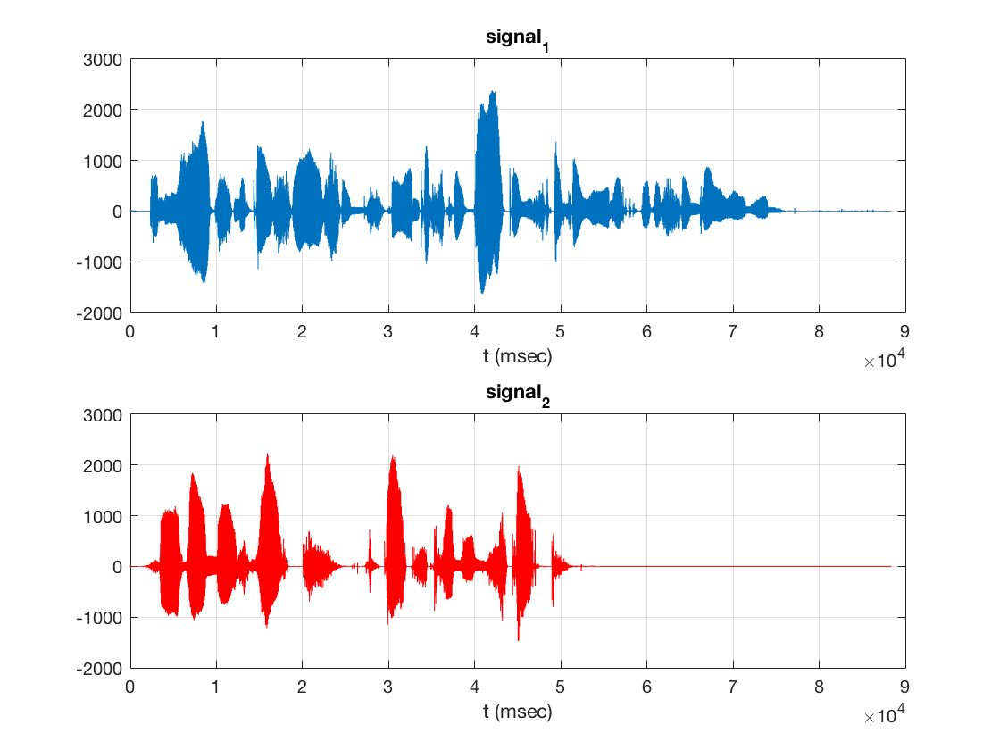

Contents
Speech separation and recognition from an HMM Trained on TIMIT copurs by HTK
University of Patras - Anastasia Grigoropoulou 2016
clear; clc; load('legacy/filters.mat'); % Set up directories HOME = '../'; WORKDIR = strcat(HOME,'HTK_TIMIT_WRD/'); TIMIT = strcat(HOME, 'TIMIT/TIMIT/');
Loading files
%load the input signals fid = fopen('coreTEST.SCP'); files = textscan(fid,'%s\n'); files = files{1}; fclose(fid); % traindir = 'matlab_examples/'; nFiles = 2; inputs = cell(2,1); fs = 16000; for i=1:nFiles [inputs{i}, Fs] = read_NIST_file(strcat(TIMIT,files{i})); assert(Fs==fs); end s = zeros(nFiles,max(cellfun('length',inputs))); for i=1:nFiles s(i,1:size(inputs{i},2)) = inputs{i}; end %plot the input signals inputs = figure; subplot(2,1,1); plot(s(1,:)),grid on, title('signal_1'), xlabel('t (msec)'); % plot s1 subplot(2,1,2); plot(s(2,:), 'r'),grid on, title('signal_2'), xlabel('t (msec)'); % plot s2
Mixing without extra noise
% create the mixing table and mix the signals A=[0.5 0.3; 0.8 0.9]; x=[]; for i=1:nFiles x=A*s; end %hear the mixed signals sound(x(1,:),fs); sound(x(2,:),fs); % plot the mixed signals figure; plot(x(1,:),'r'); hold on plot(x(2,:),'b'); hold off; %implementation of the fastica algorithm c=fastica([x(1,:);x(2,:)]); %hear the independent components of the fastica algorithm sound(c(1,:),fs); sound(c(2,:),fs); %plot the independent components of the fastica algorithm figure; subplot(2,1,1); plot(c(1,:)), grid on,title('signal_1'), xlabel('t (msec)'); subplot(2,1,2); plot(c(2,:),'r'), grid on, title('signal_2'), xlabel('t (msec)'); wav1=c(1,:) wav2=c(2,:) audiowrite('fir.wav',wav1,fs); wavwrite(wav1,fs,'SI943M.WAV'); wavwrite(wav2,fs,'SI1024M.WAV'); Reference https://www.physicsforums.com/threads/matlab-using-wavwrite-to-create-a-single-audio-file.189093/
Undefined function 'fastica' for input arguments of type 'double'. Error in mat_htk_par (line 61) c=fastica([x(1,:);x(2,:)]);
adding extra noise awgn1
z1 = awgn(y1,10,'measured'); z2 = awgn(y2,10,'measured'); %z1=y1+2*(rand(length(y1),1)-.5)) s(1,1:size_1) = z1; s(2,1:size_2) = z2; % hear the input signals sound(s(1,:),fs); sound(s(2,:),fs); %plot the input signals figure; subplot(2,1,1); plot(s(1,:)),grid on, title('signal_1'), xlabel('t (msec)'); % plot s1 subplot(2,1,2); plot(s(2,:), 'r'),grid on, title('signal_2'), xlabel('t (msec)'); % plot s2 %create the mixing table and mix the signals A=[0.5 0.3; 0.8 0.9]; x=[]; for i=1:nFiles x=A*s; end %hear the mixed signals sound(x(1,:),fs); sound(x(2,:),fs); % plot the mixed signals figure; plot(x(1,:),'r'); hold on plot(x(2,:),'b'); hold off; %implementation of the fastica algorithm c=fastica([x(1,:);x(2,:)]); %hear the independent components of the fastica algorithm sound(c(1,:),fs); sound(c(2,:),fs); %plot the independent components of the fastica algorithm figure; subplot(2,1,1); plot(c(1,:)), grid on,title('signal_1'), xlabel('t (msec)'); subplot(2,1,2); plot(c(2,:),'r'), grid on, title('signal_2'), xlabel('t (msec)'); wav1=c(1,:) wav2=c(2,:) audiowrite('fir.wav',wav1,fs); wavwrite(wav1,fs,'SI1024M_AWGN1.WAV'); wavwrite(wav2,fs,'SX223M_AWGN1.WAV');
adding extra noise awgn2
z1 = awgn(y1,5,'measured'); z2 = awgn(y2,5,'measured'); %z1=y1+2*(rand(length(y1),1)-.5)) s(1,1:size_1) = z1; s(2,1:size_2) = z2; % hear the input signals sound(s(1,:),fs); sound(s(2,:),fs); %plot the input signals figure; subplot(2,1,1); plot(s(1,:)),grid on, title('signal_1'), xlabel('t (msec)'); % plot s1 subplot(2,1,2); plot(s(2,:), 'r'),grid on, title('signal_2'), xlabel('t (msec)'); % plot s2 %create the mixing table and mix the signals A=[0.5 0.3; 0.8 0.9]; x=[]; for i=1:nFiles x=A*s; end %hear the mixed signals sound(x(1,:),fs); sound(x(2,:),fs); % plot the mixed signals figure; plot(x(1,:),'r'); hold on plot(x(2,:),'b'); hold off; %implementation of the fastica algorithm c=fastica([x(1,:);x(2,:)]); %hear the independent components of the fastica algorithm sound(c(1,:),fs); sound(c(2,:),fs); %plot the independent components of the fastica algorithm figure; subplot(2,1,1); plot(c(1,:)), grid on,title('signal_1'), xlabel('t (msec)'); subplot(2,1,2); plot(c(2,:),'r'), grid on, title('signal_2'), xlabel('t (msec)'); wav1=c(1,:) wav2=c(2,:) audiowrite('fir.wav',wav1,fs); wavwrite(wav1,fs,'SI1024M_AWGN2.WAV'); wavwrite(wav2,fs,'SX223M_AWGN2.WAV');